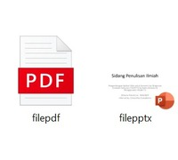
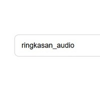

Tentang Aplikasi:
Pembuat platform: Gilberto Patrick Lie.
1. Informasi mengenai model dapat dilihat: Di sini.
2. Informasi mengenai pustaka pymupdf: Di sini.
3. Informasi mengenai pustaka pptx: Di sini.
4. Informasi mengenai pustaka gTTS: Di sini.
--------------------------------------
Petunjuk penggunaan:
1. Masukkan file berekstensi .pdf atau .pptx.
2. Masukkan nama untuk file hasil akhir.
3. Klik tombol proses lalu tunggu hingga proses selesai dan output tampil
{{ summary }}
⬇️ Download Ringkasan
{% endif %}
{% if audio_url %}